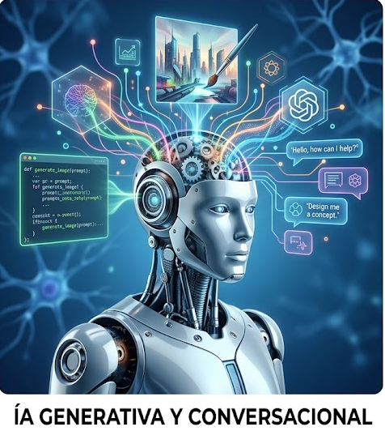
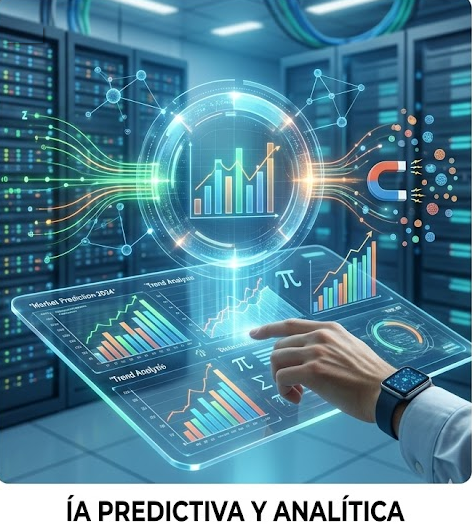

1. IA según su capacidad: De la "Estrecha" a la "Superinteligencia"
2. IA según su funcionamiento: Simbólica vs. Conexista
3. IA Generativa vs. IA Predictiva
4. Las Cuatro Etapas de Arend Hintze
5. IA Sistemas de Recomendación y Personalización Algorítmica
6. IA de Automatización Robótica de Proceso
Tipos de Inteligencias Artificiales
1. IA generativa
La Inteligencia Artificial Generativa constituye, sin duda, uno de los avances más disruptivos de la última década en el ámbito de la informática, la lingüística computacional y la ingeniería de datos. Este tipo de tecnología se define por su capacidad inherente para crear contenidos completamente nuevos, complejos y originales —ya sean textos con estructuras discursivas profundas, imágenes fotorrealistas con detalles de alta fidelidad, código de programación optimizado en múltiples lenguajes, composiciones musicales completas o modelos tridimensionales para entornos virtuales— a partir de patrones abstractos y relaciones semánticas aprendidas durante una fase previa de entrenamiento con bases de datos de carácter masivo.
Su arquitectura interna se fundamenta en los denominados modelos de lenguaje a gran escala y redes neuronales avanzadas (como las arquitecturas basadas en transformers), las cuales poseen la capacidad computacional de interpretar instrucciones detalladas, matizadas y complejas expresadas de manera directa en lenguaje natural. A diferencia de los sistemas computacionales tradicionales, cuya lógica de programación los limita a analizar, filtrar, organizar o clasificar bases de información preexistente, la vertiente generativa procesa, decodifica y sintetiza de forma profunda los conocimientos adquiridos en su entrenamiento. Esto le permite producir respuestas continuas, fluidas y coherentes que simulan con una precisión sin precedentes la capacidad creativa y redactora del ser humano, un hecho que está transformando radicalmente la dinámica de trabajo en las industrias creativas, los entornos educativos, el diseño técnico y el desarrollo de software.
 VOLVER AL ÍNDICE |
2. IA predictiva y analítica
La Inteligencia Artificial Predictiva y Analítica está orientada de manera exclusiva al tratamiento avanzado de datos masivos con el objetivo técnico de anticipar eventos, comportamientos humanos, riesgos financieros o tendencias de mercado futuras con un margen de fiabilidad estadísticamente significativo. Este tipo de sistemas trabaja procesando de forma constante ingentes volúmenes de información histórica acumulada y variables capturadas en tiempo real (lo que comúnmente se denomina Big Data), aplicando algoritmos matemáticos para identificar patrones repetitivos, anomalías estructurales y correlaciones complejas entre variables que escapan por completo a la percepción directa o a los métodos analíticos tradicionales de los analistas humanos.
La aplicación práctica de la IA predictiva resulta un pilar operativo fundamental en el sector financiero contemporáneo, donde se utiliza para la detección inmediata de fraudes con tarjetas de crédito o para predecir movimientos de riesgo en las bolsas de valores. Asimismo, es vital en el comercio internacional y la logística, permitiendo a las empresas prever con exactitud los niveles de inventario necesarios y las fluctuaciones de la demanda según las épocas del año. En campos de carácter más científico, como la meteorología de alta precisión o la medicina epidemiológica, estos modelos permiten estimar la evolución de fenómenos climáticos extremos o la propagación de enfermedades en núcleos urbanos con días de antelación. La IA analítica no busca generar material visual o de texto nuevo, ni tampoco mantener interacciones creativas con un usuario; su meta exclusiva es ofrecer una proyección matemática limpia, rigurosa y basada en probabilidades para optimizar la toma de decisiones estratégicas críticas en entornos de alta incertidumbre.
VOLVER AL ÍNDICE |
3. IA Conversacional
La Inteligencia Artificial Conversacional se especializa en el diseño y despliegue de interfaces informáticas avanzadas que permiten una interacción fluida, natural, bidireccional y completamente automatizada entre los seres humanos y las máquinas, utilizando como canal exclusivo de comunicación el lenguaje hablado o escrito. Este tipo de inteligencia artificial combina de forma integrada técnicas de Procesamiento del Lenguaje Natural (PLN) con la comprensión semántica, sintáctica y contextual, lo que capacita al software para interpretar de forma precisa no solo el significado de las palabras individuales emitidas por el usuario, sino también la intención subyacente del mensaje, el contexto general en el que se desarrolla la conversación y los matices lingüísticos o modismos propios de cada región geográfica.
La evolución técnica de este campo ha permitido superar definitivamente la época de los antiguos menús telefónicos interactivos o de los primeros asistentes digitales rígidos que se bloqueaban si el usuario no empleaba una palabra clave obligatoria y específica. Hoy en día, la IA conversacional da forma a agentes cognitivos autónomos que son capaces de mantener diálogos dinámicos coherentes a largo plazo, recordando los datos aportados por el interlocutor en turnos de palabra previos, extrayendo información de bases de datos externas en tiempo real para dar respuestas personalizadas y adaptando su registro lingüístico a la situación específica o al nivel de urgencia mostrado por el usuario. Debido a este grado de madurez técnica, su uso se ha masificado tanto en los asistentes virtuales presentes en dispositivos móviles y hogares inteligentes como en las plataformas globales de soporte técnico y atención al cliente de grandes corporaciones.
VOLVER AL ÍNDICE |
4. Las Cuatro Etapas de Arend Hintze
La Visión Artificial y la IA de Reconocimiento son disciplinas que capacitan a los sistemas informáticos para extraer de forma autónoma, rápida y estructurada información que resulta significativa y comprensible a partir de fuentes de datos visuales, tales como imágenes digitales, secuencias de vídeo, mapas de mapas de calor o transmisiones de cámaras en directo. Este tipo de inteligencia artificial funciona descomponiendo y procesando los valores numéricos de los píxeles de una captura para identificar formas geométricas, texturas, diferencias de contraste, variaciones de color y niveles de profundidad, permitiendo la clasificación, el etiquetado y el rastreo de objetos inertes, entornos geográficos complejos o rostros humanos con un nivel de eficacia que a menudo iguala o supera la agudeza del ojo humano.
En el contexto actual, el desarrollo de la visión artificial es la pieza de ingeniería angular detrás de tecnologías críticas para la sociedad. En el ámbito de la seguridad, da vida a los sistemas de reconocimiento biométrico para el control de fronteras o accesos restringidos; en la automatización industrial, dirige los movimientos de los brazos robóticos encargados de seleccionar, verificar la calidad y ensamblar piezas diminutas en cadenas de montaje de alta precisión; en el entorno digital, actúa como filtro automatizado para moderar contenidos visuales inadecuados en las redes sociales; y en el sector del transporte, representa el soporte indispensable para el funcionamiento de los vehículos autónomos, los cuales dependen enteramente de estos algoritmos para leer e interpretar las señales de tráfico en tiempo real, delimitar los carriles de la calzada por los que circulan y detectar peatones u obstáculos imprevistos en fracciones de milisegundo.
VOLVER AL ÍNDICE |
5. IA Sistemas de Recomendación y Personalización Algorítmica
Los Sistemas de Recomendación constituyen uno de los tipos de inteligencia artificial más profundamente integrados y mimetizados en el consumo cultural, social y comercial de la sociedad digital contemporánea, influyendo de manera directa en las decisiones diarias de millones de ciudadanos. Estos sistemas operan mediante la monitorización, el registro y el análisis masivo y continuo de una gran cantidad de variables conductuales generadas por cada usuario, tales como el historial de navegación, las elecciones de compra previas, las calificaciones otorgadas a ciertos contenidos, el tiempo exacto de permanencia con el cursor o la pantalla detenidos ante una publicación y las interacciones sociales con otros perfiles dentro de una misma interfaz.
A través del aprendizaje y cruce de estos patrones de conducta, tanto individuales como de colectivos con perfiles similares (técnica conocida como filtrado colaborativo), la inteligencia artificial es capaz de predecir con una alta exactitud matemática qué contenidos audiovisuales, artículos de consumo, noticias informativas o servicios digitales específicos poseen una probabilidad estadística más alta de captar la atención y el agrado del individuo en un momento concreto de su navegación. El despliegue a gran escala de esta tecnología representa el núcleo del modelo de negocio de las grandes plataformas de entretenimiento musical y audiovisual bajo demanda, de las redes sociales globales y de los portales de comercio electrónico, consiguiendo que la interfaz web o la aplicación móvil de cada usuario deje de ser un espacio genérico e idéntico para todos, transformándose en un entorno dinámico diseñado milimétricamente a la medida de sus hábitos de consumo.
VOLVER AL ÍNDICE |
6. IA de Automatización Robótica de Proceso
La Automatización Robótica de Procesos combinada con capacidades cognitivas avanzadas de inteligencia artificial (a menudo denominada RPA Inteligente o Automatización Hiperconectada) define a los sistemas de software de nivel empresarial que han sido diseñados específicamente para ejecutar tareas mecánicas, sistemáticas, repetitivas y de alta carga administrativa que tradicionalmente consumían una inmensa cantidad de horas de trabajo a los empleados humanos. A diferencia de las herramientas de automatización de software simples del pasado, que se detenían o daban error ante cualquier mínima variación en el formato de un archivo o en la disposición de un formulario, la inclusión de modelos basados en aprendizaje automático permite a estos sistemas adaptarse a entornos informáticos cambiantes y no estructurados.
De este modo, una IA de automatización cognitiva posee la facultad de abrir correos electrónicos de forma autónoma, interpretar el contenido de documentos de texto libres, extraer información financiera válida (como importes, fechas de vencimiento o conceptos impositivos) de facturas emitidas por diferentes proveedores en formatos PDF heterogéneos, verificar la validez jurídica de firmas en contratos legales, procesar transacciones bancarias complejas cruzando datos entre aplicaciones internas y actualizar bases de datos corporativas antiguas sin cometer errores de transcripción y reduciendo el margen de fallo operativo a niveles prácticamente inexistentes. Este tipo de tecnología se aplica masivamente en la optimización de los departamentos de recursos humanos para la gestión de nóminas, en el control contable y de auditoría de corporaciones globales y en la modernización de los flujos burocráticos internos de la administración pública.
VOLVER AL ÍNDICE |


VOLVER AL INICIO |